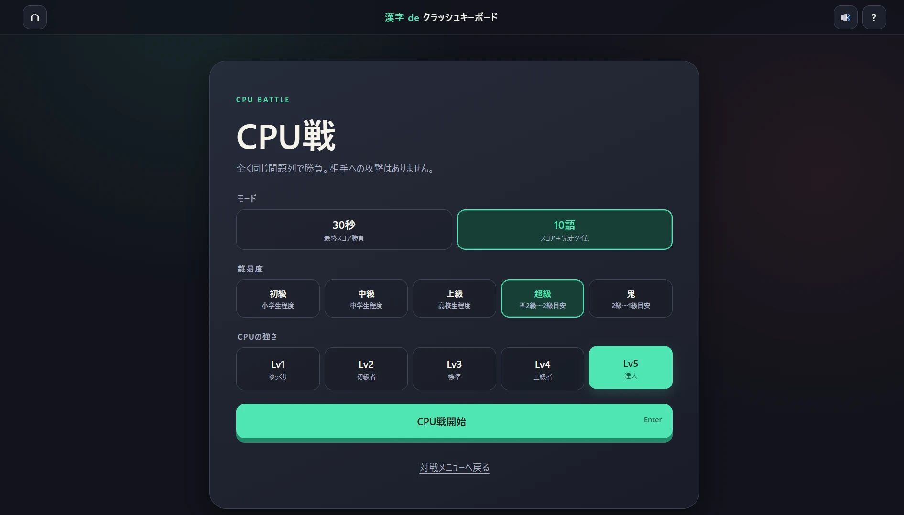

GAME FILE 02 / LATEST BUILD / IN DEVELOPMENT
読む。選ぶ。どの綴りで打つかまで決める。
キーを生き残らせ、同じ問題に挑むCPUより高く、速く。
OVERVIEW
漢字 de
クラッシュキーボード
画面に並ぶ3語のうち、読める語を答える。ただし、正解を知っているだけでは足りません。現在のキー状態で最後まで打てるか、どのローマ字表記を使うかまで考える、キーボード破損型のサバイバルタイピングです。
判定までに使った文字キーとBackspaceは、正常→黄→赤→破損の順に摩耗します。正解時は、その1語の入力中に一度も使わなかった未破損キーが1段階回復。誤答では回復せず、消した文字のキー使用も取り消されません。頻出キーを温存する語選びと、入力経路の設計が生存時間を左右します。
現在の開発版では、テンポのよい10語モードに加え、CPU Lv1〜5との1対1対戦、ルームコードで参加できる2〜8人のフレンド対戦に対応しています。同じ問題列を使いながら各プレイヤーが独立して進み、30秒では最終スコア、10語ではスコアと完走タイムを競います。相手を直接攻撃せず、純粋に漢字力・入力速度・キー管理の完成度で勝負します。
CORE SYSTEM
正解語だけでなく、打ち方も選択肢になる
3語のどれでも正解
カードを選択する操作はありません。表示された3語のうち、どれか1語の読みをローマ字で入力してEnter。漢字の知識と、今のキーで完走できるかを同時に判断します。
入力した長さが得点になる
shi / si、chi / tiなど複数のローマ字表記に対応。実際に確定した入力数が文字数ボーナスへ反映され、使ったキーもそのまま摩耗対象になります。
使うキーと休ませるキー
使ったキーは判定ごとに1段階摩耗。正解した場合だけ、入力中に一度も使わなかった黄・赤のキーが1段階回復します。Enterは摩耗対象外です。
破損後も判断は続く
破損キーは両モードともゲーム内時間10秒で正常へ復帰。3語すべてが入力不能でも即終了せず、復活を待つか、1ゲーム1回の再抽選を使うか選べます。
SOLO MODES
30秒で攻める。10語を崩さず走り切る。
MODE A
30秒 スコアアタック
30秒の制限時間内に高得点を積み上げるモード。正解語の難易度、確定した入力数、キーボードの健全率、破損キーがない状態を加味して得点が決まります。
- 長い入力ほど文字数ボーナスが増加
- 高得点を狙うほど使用キーも増える
- 誤答は使用キーを摩耗させ、少量減点
MODE B
10語 サバイバル
5個のハートを守りながら10語完走を目指すタイム＋スコアモード。短くなったぶん1問ごとの判断密度が上がり、誤入力でHPが1減り、5回目のミスでゲームオーバー。空欄EnterではHPを消費しません。
- 進行に応じて出題難易度が段階的に上昇
- クリア時にタイムボーナスを加算
- ノークラッシュ完走には追加ボーナス
PLAY REPORT
漢字・HP・キー状態を一画面で読む

JUDGEMENT FLOW
1語を確定するまでの4つの判断
- 01
3語から攻略対象を決める
読めるかどうかだけでなく、破損キーを避けて最後まで打てるか、頻出キーを温存できるかを見ます。
- 02
ローマ字の経路を決める
shi / siなど、同じ読みでも複数の入力が可能。長い表記は高得点ですが、追加したキーも摩耗します。 - 03
Enterで摩耗と得点を確定
文字キーとBackspaceの使用履歴を記録。消した文字も使用済みのままで、正解・誤答にかかわらず使用キーが悪化します。
- 04
次の1語へ向けて立て直す
正解時のみ未使用キーが1段階回復。破損した場合は10秒待つか、入力不能時に1回限りの再抽選を使います。
VERSUS
同じ問題列で、CPUやフレンドと競う
「対戦」では、CPU Lv1〜5との1対1対戦と、ルームコードで参加する2〜8人のフレンド対戦を選べます。30秒／10語と5段階の漢字難易度を設定し、同じ問題列を使いながら、それぞれ独立した進行とキー状態で競います。
相手への攻撃や妨害はありません。CPU戦ではレベルに応じて、読みの知識、入力速度、ミス率、キー管理などが変化します。フレンド対戦ではルームを作成するかコードで参加し、30秒は最終スコア、10語はスコアと完走タイムで順位を競います。
ソロでは引き続き、モード・難易度別のLOCAL TOP 5保存とランキング画像共有に対応しています。対戦は同じ問題条件で腕を比べるためのモードとして分けられています。

BEFORE PLAY
プレイ前のご案内
- PC・物理キーボード推奨。アルファベットキーとBackspaceの物理入力そのものをゲーム性に使用します。スマートフォンよりPCブラウザでのプレイをおすすめします。
- 長い入力は高得点、ただし摩耗も増加。文字数ボーナスは実際に確定したローマ字入力数で計算されます。追加で使ったキーは得点だけでなく、摩耗状態にも反映されます。
- 難易度はゲーム独自の目安。初級・中級・上級・超級・鬼の5段階。学校学習段階や漢検の対象漢字範囲を参考にしていますが、漢検協会の監修・認定・公式級判定ではありません。
- 1,950語を収録。幅広い語彙から出題され、実際に正解した読みと入力方法が採点へ反映されます。
- 開発中の作品です。語彙、難易度、スコア、バランス、画面構成、保存形式などを予告なく変更する場合があります。
紹介内容は公開中ゲームの現行仕様（10語モード、CPU戦、フレンド対戦等）を確認して更新しています。掲載画像は今回提供された最新画面へ差し替え、アイコンはゲーム配布ZIP内の assets/icon.svg をそのまま使用しています。